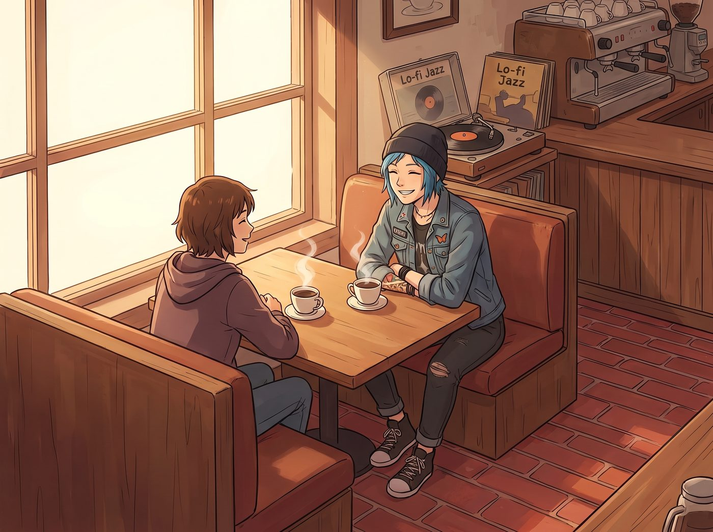

拍立得題字拉鋸戰

一、老咖啡館的午後
離開舊書店,兩人拐進附近一家鋪著紅磚地面的老咖啡館,點了兩杯熱美式,找了個靠窗的卡座坐下。店裡放著低保真的爵士唱片,唱針劃過黑膠的細微雜訊,混著咖啡機運轉的悶響,構成一種慵懶的午後氛圍。
桌上攤著今天沖洗出來的幾張拍立得,其中一張,正是那張書店裡的終極留影——Chloe 靠在古董書架前,穿著碎花裙,叼著粉色泡泡糖,一臉桀驁又莫名有點可愛的表情。
二、靈魂題字
Max 咬著黑色油性記號筆的筆帽,雙手托腮,對著那張照片反覆端詳了好一會兒,像是在斟酌某種極為重要的措辭。
「妳在幹嘛?」Chloe 端著咖啡,好奇地湊過來看。
「靈感需要沉澱。」Max 一臉認真,終於清了清嗓子,低頭在照片底端的空白處,寫下一行工整娟秀的字跡:
「西雅圖·先鋒廣場,被古董書俘獲的野性春日精靈。Max 攝,2013 秋。」
三、當場破防
Chloe 湊近看清那行字的瞬間,一口咖啡直接噴在了餐巾紙上,整個人差點從卡座上滑下去。
「春日精靈?!」她嗆得直咳嗽,眼淚都快笑出來,「Maxine,妳腦子是被暗房的顯影液泡發了嗎?老娘這輩子,跟『精靈』兩個字沒有半毛錢關係!」
「我覺得很貼切,」Max 一臉無辜,絲毫沒有收回題字的意思,「妳當時的表情,確實有種被迫融入田園牧歌卻渾身不自在的野性美。」
「野性美個頭!」Chloe 一把搶過那支記號筆,「這詞給我拿去餵狗。」
四、暴躁塗改
她粗暴地在「春日精靈」四個字上劃了兩道濃重的橫線,幾乎要把紙張劃破,緊接著,在旁邊空白處,用帶著誇張箭頭的狂草筆跡,龍飛鳳舞地補上一行:
「修正:被迫穿窗簾布打劫書店的通緝犯,以及她的共犯小書呆子。」
Max 瞪大眼睛,伸手就要搶回那張照片:「妳這是在毀掉我的藝術創作!」
「這叫撥亂反正,」Chloe 舉著照片,躲開她伸過來的手,語氣理直氣壯,「妳那套文藝腔調,跟照片裡老娘那張臭臉,根本對不上。」
五、默契的收藏
兩人隔著桌子你爭我奪了幾個回合,Max 氣得鼓起腮幫子,伸長手臂想搶回主導權,卻怎麼也搶不過 Chloe 那雙修車練出來的手勁。
Chloe 眼疾手快地把那張還帶著未乾墨水痕跡的照片高高舉起,對著窗外的光線晃了晃,吹乾上面的字跡,一臉得意。
「這才叫搖滾史料,」她慢悠悠地把照片塞進自己那件破皮夾克的內側口袋,和昨晚那張飛魚驚魂照放在一起,「懂不懂?」
Max 沒好氣地瞪她,伸手蘸了點杯口殘留的咖啡奶泡,冷不防地抹在她的鼻尖上。
「這是妳應得的懲罰,」她笑著宣布,語氣裡帶著毫不掩飾的得意。
Chloe 頂著鼻尖那撮白色奶泡,愣了兩秒,剛想抬手抹掉——Max 卻已經湊近,不由分說地俯身,舌尖輕巧地舔掉了那撮奶泡,動作快得像是隨口一嘗,眼神裡卻帶著熟悉的、犯病時特有的促狹笑意。
Chloe 瞬間僵住,耳根「唰」地紅透,難得說不出一句反駁的話,只是瞪大眼睛,嘴唇無聲地開合了兩下。
那份害羞維持不到兩秒——她餘光瞥見鄰座幾位顧客正饒有興致地朝這邊張望,交頭接耳地竊笑,那股臊得慌的窘迫,瞬間被一股熟悉的兇悍取代。
「都看什麼看!」她猛地轉頭,朝著鄰座那幾道視線兇狠地瞪過去,語氣裡帶著毫不掩飾的火氣,「沒見過情侶打鬧啊?!」
鄰座的顧客被這突如其來的氣勢嚇得縮了縮脖子,識趣地收回視線,假裝專心研究起自己面前的咖啡杯。
Chloe 這才轉回頭,對上 Max 那張還帶著得逞笑意的臉,沒好氣地伸手戳了戳她的額頭。
「妳這古怪的癖好,」她從牙縫裡擠出這句話,耳根依然帶著沒褪乾淨的紅,「跟啃番茄醬那次是同一個毛病吧?」
「新增的收藏,」Max 毫不否認,笑得眉眼彎彎,「反正每次效果都不錯。」
「哪裡不錯了!」
「妳臉紅的樣子,」Max 湊近她,壓低聲音,帶著點得意的調笑,「比任何底片顯影出來的畫面都好看。」
Chloe 被這句話徹底噎住,張了張嘴,最終只能把後半句反駁咽回肚子裡,悶聲喝了一大口已經涼掉的咖啡,耳朵尖卻還是紅得藏不住。
窗外的先鋒廣場,午後的陽光斜斜灑落在紅磚步道上,那張寫滿兩種截然不同筆跡、記錄著同一個瞬間的拍立得,靜靜躺在 Chloe 貼胸的口袋裡,成了這趟旅程裡,又一份被小心珍藏起來的、荒謬又真心的紀念。